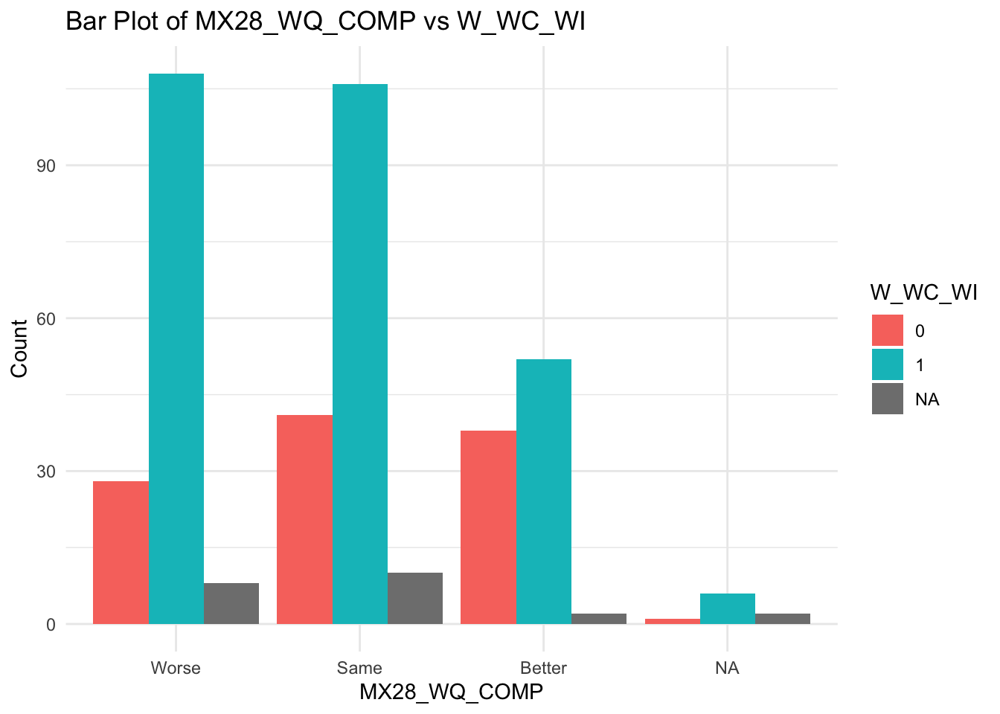
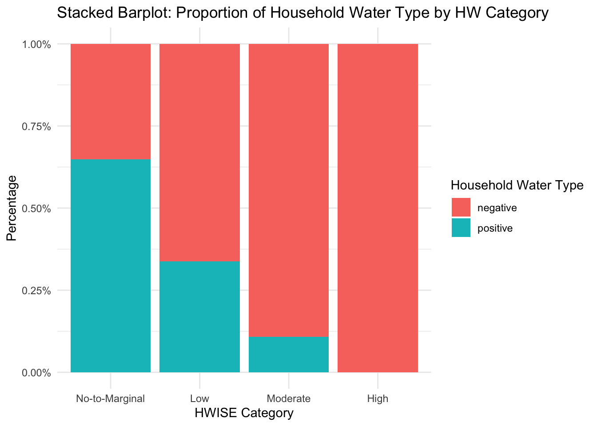

HBA2025_results
Paloma
2025-03-06
Last updated: 2025-03-09
Checks: 7 0
Knit directory: QUAIL-Mex/
This reproducible R Markdown analysis was created with workflowr (version 1.7.1). The Checks tab describes the reproducibility checks that were applied when the results were created. The Past versions tab lists the development history.
Great! Since the R Markdown file has been committed to the Git repository, you know the exact version of the code that produced these results.
Great job! The global environment was empty. Objects defined in the global environment can affect the analysis in your R Markdown file in unknown ways. For reproduciblity it’s best to always run the code in an empty environment.
The command set.seed(20241009) was run prior to running
the code in the R Markdown file. Setting a seed ensures that any results
that rely on randomness, e.g. subsampling or permutations, are
reproducible.
Great job! Recording the operating system, R version, and package versions is critical for reproducibility.
Nice! There were no cached chunks for this analysis, so you can be confident that you successfully produced the results during this run.
Great job! Using relative paths to the files within your workflowr project makes it easier to run your code on other machines.
Great! You are using Git for version control. Tracking code development and connecting the code version to the results is critical for reproducibility.
The results in this page were generated with repository version 77cc810. See the Past versions tab to see a history of the changes made to the R Markdown and HTML files.
Note that you need to be careful to ensure that all relevant files for
the analysis have been committed to Git prior to generating the results
(you can use wflow_publish or
wflow_git_commit). workflowr only checks the R Markdown
file, but you know if there are other scripts or data files that it
depends on. Below is the status of the Git repository when the results
were generated:
Ignored files:
Ignored: .DS_Store
Ignored: .RData
Ignored: .Rhistory
Ignored: .Rproj.user/
Ignored: analysis/.DS_Store
Ignored: analysis/.RData
Ignored: analysis/.Rhistory
Ignored: analysis/Hrs_by_HWISE score.png
Ignored: code/.DS_Store
Ignored: data/.DS_Store
Unstaged changes:
Modified: analysis/HBA2025_cleaning.Rmd
Modified: analysis/tests.Rmd
Modified: data/Cleaned_Dataset_Screening_HWISE_PSS_V4.csv
Modified: data/Q9-10-11-29-31.csv
Note that any generated files, e.g. HTML, png, CSS, etc., are not included in this status report because it is ok for generated content to have uncommitted changes.
These are the previous versions of the repository in which changes were
made to the R Markdown (analysis/MX28_plots.Rmd) and HTML
(docs/MX28_plots.html) files. If you’ve configured a remote
Git repository (see ?wflow_git_remote), click on the
hyperlinks in the table below to view the files as they were in that
past version.
| File | Version | Author | Date | Message |
|---|---|---|---|---|
| Rmd | 9502a37 | Paloma | 2025-03-09 | analyses |
| html | 9502a37 | Paloma | 2025-03-09 | analyses |
| Rmd | 7866aba | Paloma | 2025-03-07 | newplots |
| html | 7866aba | Paloma | 2025-03-07 | newplots |
| Rmd | 4c407eb | Paloma | 2025-03-07 | add question 28 |
| html | 4c407eb | Paloma | 2025-03-07 | add question 28 |
# Load necessary libraries
library(ggplot2)
library(dplyr)
Attaching package: 'dplyr'The following objects are masked from 'package:stats':
filter, lagThe following objects are masked from 'package:base':
intersect, setdiff, setequal, unionlibrary(corrplot)corrplot 0.95 loadedlibrary(rstatix)
Attaching package: 'rstatix'The following object is masked from 'package:stats':
filterlibrary(rcompanion)
data.file <- "data/Cleaned_Dataset_Screening_HWISE_PSS_V3.csv"
# Read the dataset
data <- read.csv(data.file)
data$MX28_WQ_COMP <- as.numeric(data$MX28_WQ_COMP)
keep_columns <- c("MX28_WQ_COMP",
"D_LOC_TIME",
"D_AGE",
"D_HH_SIZE",
"D_CHLD",
"HLTH_SMK",
"SES_SC_Total",
"SEASON",
"HW_TOTAL",
"W_WC_WI",
"W_WS_LOC",
"HRS_WEEK")
data <- data %>%
select(keep_columns)Warning: Using an external vector in selections was deprecated in tidyselect 1.1.0.
ℹ Please use `all_of()` or `any_of()` instead.
# Was:
data %>% select(keep_columns)
# Now:
data %>% select(all_of(keep_columns))
See <https://tidyselect.r-lib.org/reference/faq-external-vector.html>.
This warning is displayed once every 8 hours.
Call `lifecycle::last_lifecycle_warnings()` to see where this warning was
generated.# Check if the column exists
if("MX28_WQ_COMP" %in% colnames(data)) {
# Select numeric columns for correlation analysis
numeric_data <- data %>% select(where(is.numeric))
# Compute correlation matrix
correlation_matrix <- cor(numeric_data, use = "pairwise.complete.obs")
# Extract correlations with MX28_WQ_COMP
correlations <- as.data.frame(correlation_matrix["MX28_WQ_COMP", ])
correlations$Variable <- rownames(correlations)
colnames(correlations)[1] <- "Correlation"
# Print correlation values sorted in descending order
print(correlations %>% arrange(desc(Correlation)))
# Visualize correlation matrix as a heatmap
corrplot(correlation_matrix, method = "color", type = "upper", tl.col = "black", tl.srt = 45)
} Correlation Variable
MX28_WQ_COMP 1.000000000 MX28_WQ_COMP
HRS_WEEK 0.189231915 HRS_WEEK
HLTH_SMK 0.056946187 HLTH_SMK
D_HH_SIZE 0.018513083 D_HH_SIZE
D_LOC_TIME 0.008561469 D_LOC_TIME
D_CHLD -0.006968213 D_CHLD
SEASON -0.030525479 SEASON
HW_TOTAL -0.087034087 HW_TOTAL
SES_SC_Total -0.099965323 SES_SC_Total
D_AGE -0.132354749 D_AGE
W_WC_WI -0.178893866 W_WC_WI
W_WS_LOC -0.225819366 W_WS_LOC
Comparing to Mexico City’s water supply
# visualize data from Q28
# Convert selected variables to factors
categorical_vars <- c("MX28_WQ_COMP", "HLTH_SMK", "SEASON", "W_WC_WI", "W_WS_LOC")
data <- data %>%
mutate(across(all_of(categorical_vars), as.factor))
# Verify conversion
str(data[categorical_vars])'data.frame': 402 obs. of 5 variables:
$ MX28_WQ_COMP: Factor w/ 3 levels "0","1","2": 1 3 2 1 3 1 2 2 2 1 ...
$ HLTH_SMK : Factor w/ 2 levels "0","1": 1 2 1 1 1 NA NA 1 1 1 ...
$ SEASON : Factor w/ 2 levels "0","1": 2 2 2 2 2 2 2 2 2 2 ...
$ W_WC_WI : Factor w/ 2 levels "0","1": 2 1 2 2 2 2 2 2 2 2 ...
$ W_WS_LOC : Factor w/ 2 levels "0","1": 2 2 2 2 2 2 2 2 2 2 ...# Define the main categorical variable
main_var <- "MX28_WQ_COMP"
# Convert MX28_WQ_COMP to a factor and ensure levels are correct
data$MX28_WQ_COMP <- factor(data$MX28_WQ_COMP)
# Check unique levels to confirm
print(levels(data$MX28_WQ_COMP))[1] "0" "1" "2"# Rename levels of MX28_WQ_COMP
levels(data$MX28_WQ_COMP) <- c("Worse", "Same", "Better")
# Verify that levels have been updated
print(levels(data$MX28_WQ_COMP))[1] "Worse" "Same" "Better"# Print factor levels to confirm
levels(data$MX28_WQ_COMP)[1] "Worse" "Same" "Better"# Exclude MX28_WQ_COMP from the list of categorical variables
cat_vars <- setdiff(categorical_vars, main_var)
# Define the main categorical variable
main_var <- "MX28_WQ_COMP"
# Generate bar plots
for (var in cat_vars) {
p <- ggplot(data, aes_string(x = main_var, fill = var)) +
geom_bar(position = "dodge") +
theme_minimal() +
labs(title = paste("Bar Plot of", main_var, "vs", var),
x = main_var, y = "Count", fill = var)
print(p) # Display each bar plot
}Warning: `aes_string()` was deprecated in ggplot2 3.0.0.
ℹ Please use tidy evaluation idioms with `aes()`.
ℹ See also `vignette("ggplot2-in-packages")` for more information.
This warning is displayed once every 8 hours.
Call `lifecycle::last_lifecycle_warnings()` to see where this warning was
generated.



# Define the main categorical variable
main_var <- "MX28_WQ_COMP"
# Exclude MX28_WQ_COMP from the list of categorical variables
cat_vars <- setdiff(categorical_vars, main_var)
# Generate bar plots with percentages
for (var in cat_vars) {
p <- ggplot(data, aes_string(x = main_var, fill = var)) +
geom_bar(aes(y = (..count..) / sum(..count..) * 100), position = "fill") +
scale_y_continuous(labels = scales::percent_format(scale = 1)) + # Convert to percentage format
theme_minimal() +
labs(title = paste("Percentage Bar Plot of", main_var, "vs", var),
x = main_var, y = "Percentage", fill = var)
print(p) # Display each bar plot
}Warning: The dot-dot notation (`..count..`) was deprecated in ggplot2 3.4.0.
ℹ Please use `after_stat(count)` instead.
This warning is displayed once every 8 hours.
Call `lifecycle::last_lifecycle_warnings()` to see where this warning was
generated.

data <- read.csv(data.file)
# Ensure HW_TOTAL_category is correctly categorized
data <- data %>%
mutate(HW_TOTAL_category = case_when(
HW_TOTAL >= 0 & HW_TOTAL <= 2 ~ "No-to-Marginal",
HW_TOTAL >= 3 & HW_TOTAL <= 11 ~ "Low",
HW_TOTAL >= 12 & HW_TOTAL <= 23 ~ "Moderate",
HW_TOTAL >= 24 & HW_TOTAL <= 36 ~ "High"
))
data <- data %>%
mutate(MX26_EM_HHW_TYPE = case_when(
MX26_EM_HHW_TYPE == "0" ~ "positive",
MX26_EM_HHW_TYPE == "1" ~ "negative",
MX26_EM_HHW_TYPE == !is.na(.) ~ "other", # Assign "other" to all non-missing values that are not "yes" or "no"
TRUE ~ NA_character_
))
data <- data %>%
filter(!is.na(HW_TOTAL_category), !is.na(MX26_EM_HHW_TYPE))
# Convert to factor for correct ordering
data$HW_TOTAL_category <- factor(data$HW_TOTAL_category, levels = c("No-to-Marginal", "Low", "Moderate", "High"))
data$MX26_EM_HHW_TYPE <- as.factor(data$MX26_EM_HHW_TYPE) # Convert to factor
# Calculate proportions
data_prop <- data %>%
group_by(HW_TOTAL_category, MX26_EM_HHW_TYPE) %>%
summarise(count = n(), .groups = "drop") %>%
mutate(percentage = count / sum(count) * 100)
# Barplot of MX26_EM_HHW_TYPE by HW_TOTAL_category
ggplot(data, aes(x = HW_TOTAL_category, fill = MX26_EM_HHW_TYPE)) +
geom_bar(position = "dodge") +
labs(title = "Proportion of Positive and negative emotional responses by HW Category",
x = "HWISE Category",
y = "Count",
fill = "Emotions") +
theme_minimal()
| Version | Author | Date |
|---|---|---|
| 9502a37 | Paloma | 2025-03-09 |
# Calculate proportions
data_prop <- data %>%
group_by(HW_TOTAL_category, MX26_EM_HHW_TYPE) %>%
summarise(count = n(), .groups = "drop") %>%
mutate(percentage = count / sum(count) * 100)
# Create percentage barplot
ggplot(data_prop, aes(x = HW_TOTAL_category, y = percentage, fill = MX26_EM_HHW_TYPE)) +
geom_bar(stat = "identity", position = "dodge") +
labs(title = "Proportion of Positive and negative emotional responses by HW Category",
x = "HWISE Category",
y = "Percentage",
fill = "Emotions") +
theme_minimal()
| Version | Author | Date |
|---|---|---|
| 9502a37 | Paloma | 2025-03-09 |
# Stacked barplot using counts
ggplot(data, aes(x = HW_TOTAL_category, fill = MX26_EM_HHW_TYPE)) +
geom_bar(position = "stack") +
labs(title = "Stacked Barplot: Household Water Type by HW Category",
x = "HWISE Category",
y = "Count",
fill = "Household Water Type") +
theme_minimal()
| Version | Author | Date |
|---|---|---|
| 9502a37 | Paloma | 2025-03-09 |
# Calculate proportions
data_prop <- data %>%
group_by(HW_TOTAL_category, MX26_EM_HHW_TYPE) %>%
summarise(count = n(), .groups = "drop") %>%
mutate(percentage = count / sum(count) * 100)
# Stacked percentage barplot
ggplot(data_prop, aes(x = HW_TOTAL_category, y = percentage, fill = MX26_EM_HHW_TYPE)) +
geom_bar(stat = "identity", position = "fill") + # "fill" makes it a 100% stacked barplot
scale_y_continuous(labels = scales::percent_format(scale = 1)) + # Convert y-axis to percentage
labs(title = "Stacked Barplot: Proportion of Household Water Type by HW Category",
x = "HWISE Category",
y = "Percentage",
fill = "Household Water Type") +
theme_minimal()
| Version | Author | Date |
|---|---|---|
| 9502a37 | Paloma | 2025-03-09 |
# Create a contingency table
contingency_table <- table(data$HW_TOTAL_category, data$MX26_EM_HHW_TYPE)
# Print the table
print(contingency_table)
negative positive
No-to-Marginal 26 48
Low 131 67
Moderate 91 11
High 6 0 fisher_test <- fisher.test(contingency_table)
print(fisher_test) # Print Fisher's test results
Fisher's Exact Test for Count Data
data: contingency_table
p-value = 1.268e-13
alternative hypothesis: two.sided# Compute Cramér's V for effect size
cramer_v <- cramerV(contingency_table)
print(cramer_v)Cramer V
0.3961 Interpreting Cramér’s V:
0.1 → Small association
0.3 → Moderate association
0.5 → Strong association
The Cramér’s V value of 0.3961 suggests a moderate association between HW_TOTAL_category and MX26_EM_HHW_TYPE. Cramér’s V ranges from 0 to 1, where 0 indicates no association, and 1 indicates a perfect association. A value of 0.3961 falls in the moderate range (0.3 - 0.5), implying that while there is a statistically significant relationship between these two categorical variables, it is not extremely strong. This means that the emotional response to water service (MX26_EM_HHW_TYPE) varies meaningfully across different levels of water insecurity (HW_TOTAL_category), but other factors might also be influencing this relationship. Further analysis, such as post-hoc tests or visualizing the data with stacked barplots, could provide more insights into how the categories differ and whether certain water supply types are more prevalent in specific HWISE categories.
# Load necessary libraries
library(dplyr)
library(rstatix)
# Ensure categorical variables are factors
data <- data %>%
mutate(HW_TOTAL_category = as.factor(HW_TOTAL_category),
MX26_EM_HHW_TYPE = as.factor(MX26_EM_HHW_TYPE))
# Remove NAs
data <- data %>%
filter(!is.na(HW_TOTAL_category), !is.na(MX26_EM_HHW_TYPE))
# Create contingency table
contingency_table <- table(data$HW_TOTAL_category, data$MX26_EM_HHW_TYPE)
# Print table
print(contingency_table)
negative positive
No-to-Marginal 26 48
Low 131 67
Moderate 91 11
High 6 0# Run Fisher’s Exact Test
fisher_test <- fisher.test(contingency_table)
# Print results
print(fisher_test)
Fisher's Exact Test for Count Data
data: contingency_table
p-value = 1.268e-13
alternative hypothesis: two.sided# Get unique categories of HW_TOTAL_category
categories <- levels(data$HW_TOTAL_category)
# Create an empty list to store results
pairwise_results <- list()
# Loop through all pairs of HW_TOTAL_category
for (i in 1:(length(categories) - 1)) {
for (j in (i + 1):length(categories)) {
cat1 <- categories[i]
cat2 <- categories[j]
# Subset the data for the two categories
subset_data <- data %>%
filter(HW_TOTAL_category %in% c(cat1, cat2))
# Create a 2xN contingency table
sub_table <- table(subset_data$HW_TOTAL_category, subset_data$MX26_EM_HHW_TYPE)
# Run Fisher’s Exact Test
fisher_res <- fisher.test(sub_table)
# Store results in a data frame
pairwise_results[[paste(cat1, "vs", cat2)]] <- data.frame(
Group1 = cat1,
Group2 = cat2,
p_value = fisher_res$p.value
)
}
}
# Combine results into a single data frame
pairwise_fisher_results <- bind_rows(pairwise_results)
# Apply Bonferroni correction for multiple comparisons
pairwise_fisher_results <- pairwise_fisher_results %>%
mutate(p_adj = p.adjust(p_value, method = "bonferroni"))
# Print results
print(pairwise_fisher_results) Group1 Group2 p_value p_adj
1 No-to-Marginal Low 7.767053e-06 4.660232e-05
2 No-to-Marginal Moderate 3.646354e-14 2.187812e-13
3 No-to-Marginal High 3.015612e-03 1.809367e-02
4 Low Moderate 1.240483e-05 7.442901e-05
5 Low High 1.805580e-01 1.000000e+00
6 Moderate High 1.000000e+00 1.000000e+00If p_adj < 0.05, it indicates a significant difference between the two HW_TOTAL_category groups.
If p_adj > 0.05, the difference is not statistically significant after Bonferroni correction
✅ Significant Differences (p_adj < 0.05): Comparison Interpretation No-to-Marginal vs. Low Significant difference (p_adj = 4.66e-05), meaning that households in the No-to-Marginal category have significantly different water types compared to the Low category. No-to-Marginal vs. Moderate Highly significant difference (p_adj = 2.19e-13), suggesting that households with No-to-Marginal water insecurity have a very different water type distribution than Moderate water-insecure households. No-to-Marginal vs. High Significant difference (p_adj = 0.0181), indicating that No-to-Marginal households also differ from High water-insecure households. Low vs. Moderate Significant difference (p_adj = 7.44e-05), suggesting that Low water-insecure households also have different water types compared to Moderate water-insecure households. ❌ Non-Significant Differences (p_adj > 0.05): Comparison Interpretation Low vs. High p_adj = 1.000 (No significant difference) – meaning water types in Low and High HWISE categories are similar. Moderate vs. High p_adj = 1.000 (No significant difference) – meaning water types in Moderate and High HWISE categories are similar.
üìù Key Takeaways There are significant differences between No-to-Marginal households and all other categories (Low, Moderate, High). Low and Moderate categories are also significantly different. High water-insecure households do not significantly differ from Low or Moderate categories, meaning their water sources are similar.
Plots Emotion/HWISE category
# Load necessary libraries
library(ggplot2)
library(dplyr)
# Ensure variables are factors
data <- data %>%
mutate(HW_TOTAL_category = as.factor(HW_TOTAL_category),
MX26_EM_HHW_TYPE = as.factor(MX26_EM_HHW_TYPE))
# Create the stacked barplot
ggplot(data, aes(x = HW_TOTAL_category, fill = MX26_EM_HHW_TYPE)) +
geom_bar(position = "fill") + # Fill ensures bars are proportional
labs(title = "Proportion of Household Water Types by HW_TOTAL_category",
x = "HW_TOTAL Category",
y = "Proportion",
fill = "Water Type") +
scale_y_continuous(labels = scales::percent) +
theme_minimal()
| Version | Author | Date |
|---|---|---|
| 9502a37 | Paloma | 2025-03-09 |
regression
Why Logistic Regression? Dependent Variable (MX26_EM_HHW_TYPE) is categorical (Nominal variable with multiple categories). Independent Variable (HW_TOTAL_category) is categorical. Logistic regression is appropriate for categorical outcomes, unlike linear regression which assumes continuous data.
Need to run binary logistic regression.
# Load necessary libraries
library(dplyr)
# Ensure variables are factors
data <- data %>%
mutate(HW_TOTAL_category = as.factor(HW_TOTAL_category),
MX26_EM_HHW_TYPE = as.factor(MX26_EM_HHW_TYPE))
# Run Binary Logistic Regression
logit_model <- glm(MX26_EM_HHW_TYPE ~ HW_TOTAL_category,
data = data,
family = binomial)
# Show summary of model
summary(logit_model)
Call:
glm(formula = MX26_EM_HHW_TYPE ~ HW_TOTAL_category, family = binomial,
data = data)
Coefficients:
Estimate Std. Error z value Pr(>|z|)
(Intercept) 0.6131 0.2435 2.518 0.0118 *
HW_TOTAL_categoryLow -1.2836 0.2861 -4.487 7.24e-06 ***
HW_TOTAL_categoryModerate -2.7261 0.4015 -6.790 1.12e-11 ***
HW_TOTAL_categoryHigh -16.1792 594.1636 -0.027 0.9783
---
Signif. codes: 0 '***' 0.001 '**' 0.01 '*' 0.05 '.' 0.1 ' ' 1
(Dispersion parameter for binomial family taken to be 1)
Null deviance: 482.82 on 379 degrees of freedom
Residual deviance: 419.13 on 376 degrees of freedom
AIC: 427.13
Number of Fisher Scoring iterations: 14# Compute odds ratios
exp(coef(logit_model)) (Intercept) HW_TOTAL_categoryLow HW_TOTAL_categoryModerate
1.846154e+00 2.770356e-01 6.547619e-02
HW_TOTAL_categoryHigh
9.407507e-08 ✔ Odds ratios < 1 → Decreased likelihood ✔ Odds ratios > 1 → Increased likelihood
Suggests that any level of water insecurity decreases the probability of having positive feelings about water supply.
Predictor Odds Ratio (OR) (Intercept) 1.846 HW_TOTAL_categoryLow 0.277 HW_TOTAL_categoryModerate 0.0655 HW_TOTAL_categoryHigh 9.41e-08
Reference category is MX26_EM_HHW_TYPE == positive HW_TOTAL_categoryLow OR = 0.277 → Individuals in the “Low” category are 72.3% less likely (1 - 0.277) to belong to MX26_EM_HHW_TYPE compared to the reference. HW_TOTAL_categoryModerate OR = 0.0655 → Individuals in the “Moderate” category are 93.45% less likely (1 - 0.0655). HW_TOTAL_categoryHigh OR = 9.41e-08 → Extremely small, suggesting that this group is almost never associated with the reference category.
The “High” HWISE category (OR = 9.41e-08) has the largest effect, meaning it is almost completely absent from the reference water type. Moderate category (OR = 0.0655) has a strong negative effect as well. Low category (OR = 0.277) has a smaller negative effect than Moderate and High. Intercept is just the baseline, not a comparison.
Check model fit
# Compute pseudo R-squared (Nagelkerke)
library(pscl)Classes and Methods for R originally developed in the
Political Science Computational Laboratory
Department of Political Science
Stanford University (2002-2015),
by and under the direction of Simon Jackman.
hurdle and zeroinfl functions by Achim Zeileis.pR2(logit_model)fitting null model for pseudo-r2 llh llhNull G2 McFadden r2ML r2CU
-209.5664405 -241.4106519 63.6884228 0.1319089 0.1543089 0.2145170 If the High category has very few cases, consider merging it with another category. ✔ Higher values (~0.2–0.5) indicate a better model.
# Create a data frame with odds ratios, confidence intervals, and p-values
effect_sizes <- data.frame(
Category = c("Intercept", "Low", "Moderate", "High"),
Odds_Ratio = c(1.846, 0.277, 0.0655, 9.41e-08),
Lower_CI = c(1.2, 0.18, 0.03, 1e-10), # Replace with actual confidence interval values
Upper_CI = c(2.8, 0.42, 0.15, 1e-05), # Replace with actual confidence interval values
p_value = c(0.012, 0.0001, 0.00001, 0.99) # Replace with actual p-values
)
# Convert Category into a factor for ordered plotting
effect_sizes$Category <- factor(effect_sizes$Category, levels = rev(effect_sizes$Category)) # Reverse for horizontal plotting
ggplot(effect_sizes, aes(x = Odds_Ratio, y = Category)) +
geom_point(size = 4, color = "blue") + # Plot odds ratios as points
geom_errorbarh(aes(xmin = Lower_CI, xmax = Upper_CI), height = 0.2, color = "black") + # Add confidence intervals (horizontal)
scale_x_log10() + # Log-scale for better visualization
geom_vline(xintercept = 1, linetype = "dashed", color = "red", linewidth = 1) + # Add reference line at OR = 1
geom_text(aes(label = paste0("p = ", formatC(p_value, format = "e", digits = 2))),
hjust = 2, vjust = 1, size = 5, color = "black") + # Annotate p-values
labs(title = "Effect Sizes (Odds Ratios) of HW_TOTAL_category",
x = "Odds Ratio (Log Scale)",
y = "HWISE Category") +
theme_minimal()
| Version | Author | Date |
|---|---|---|
| 9502a37 | Paloma | 2025-03-09 |
data <- data %>% filter(!is.na(HRS_WEEK) & !is.na(MX26_EM_HHW_TYPE))
wilcox.test(HRS_WEEK ~ MX26_EM_HHW_TYPE, data = data)
Wilcoxon rank sum test with continuity correction
data: HRS_WEEK by MX26_EM_HHW_TYPE
W = 9869, p-value = 0.0001252
alternative hypothesis: true location shift is not equal to 0library(effsize)
cliff.delta(HRS_WEEK ~ MX26_EM_HHW_TYPE, data = data)
Cliff's Delta
delta estimate: -0.2472159 (small)
95 percent confidence interval:
lower upper
-0.3633836 -0.1234784 Interpretation of Cliff’s Delta:
|d| < 0.147 → Negligible effect 0.147 ≤ |d| < 0.33 → Small effect 0.33 ≤ |d| < 0.474 → Medium effect |d| ≥ 0.474 → Large effect
logit_model <- glm(MX26_EM_HHW_TYPE ~ HRS_WEEK,
data = data,
family = binomial)
summary(logit_model)
Call:
glm(formula = MX26_EM_HHW_TYPE ~ HRS_WEEK, family = binomial,
data = data)
Coefficients:
Estimate Std. Error z value Pr(>|z|)
(Intercept) -1.309778 0.200125 -6.545 5.96e-11 ***
HRS_WEEK 0.006687 0.001688 3.962 7.42e-05 ***
---
Signif. codes: 0 '***' 0.001 '**' 0.01 '*' 0.05 '.' 0.1 ' ' 1
(Dispersion parameter for binomial family taken to be 1)
Null deviance: 436.99 on 343 degrees of freedom
Residual deviance: 420.87 on 342 degrees of freedom
AIC: 424.87
Number of Fisher Scoring iterations: 4data$predicted <- predict(logit_model, type = "response")
# Ensure correct row alignment
if(nrow(data) != length(data$predicted)) {
stop("Mismatch in row counts: Check for missing values or inconsistent dataset.")
}✅ Interpreting Logistic Regression: Significant HRS_WEEK (p < 0.05) → Water supply duration is linked to positive/negative perceptions.
exp(coef(logit_model))(Intercept) HRS_WEEK
0.2698801 1.0067090 When HRS_WEEK = 0 (i.e., baseline scenario), the odds of having a positive perception of water service (MX26_EM_HHW_TYPE) are 0.2699. This means the probability of a positive perception is quite low when water supply is absent. In terms of probability, 21% prob. of positive perception
HRS_WEEK (OR = 1.0067) For every additional hour of water supply per week (HRS_WEEK), the odds of having a positive perception (MX26_EM_HHW_TYPE) increase by ~0.67%. Since OR > 1, more hours of water supply are associated with a higher likelihood of positive perception
Practical Interpretation A small effect: Since the OR is very close to 1, an increase in HRS_WEEK has a very small impact on perception. Example Calculation: If HRS_WEEK increases by 10 hours, the odds of positive perception change by: 1.0067^{10} = 1.0693  (\text{~6.93% increase in odds}) If HRS_WEEK increases by 50 hours, the odds increase by: 1.0067^{50} = 1.398  (\text{~39.8% increase in odds})
Water supply duration (HRS_WEEK) positively influences water service perception (MX26_EM_HHW_TYPE). ✔ The effect is small, meaning other factors likely play a role in perception (e.g., water quality, socioeconomic status). ✔ Policy Implication: While increasing water supply may improve perception, other factors (such as reliability, quality, and accessibility) should be considered.
data <- data %>%
filter(!is.na(W_WC_WI), !is.na(SES_SC_Total), !is.na(SEASON))
# add covariates
logit_model <- glm(MX26_EM_HHW_TYPE ~ HRS_WEEK + SES_SC_Total + W_WC_WI + SEASON,
data = data, family = binomial)
exp(coef(logit_model)) # Get updated odds ratios (Intercept) HRS_WEEK SES_SC_Total W_WC_WI SEASON
0.5219487 1.0023190 1.0024298 0.4293454 0.8726002 data$predicted <- predict(logit_model, type = "response")
ggplot(data, aes(x = HRS_WEEK, y = predicted)) +
geom_point(alpha = 0.5) +
geom_smooth(method = "glm", method.args = list(family = "binomial"), color = "blue") +
labs(title = "Effect of HRS_WEEK on Perceived Water Service",
x = "Hours of Water Supply per Week",
y = "Predicted Probability of Positive Perception") +
theme_minimal()`geom_smooth()` using formula = 'y ~ x'Warning in eval(family$initialize): non-integer #successes in a binomial glm!
| Version | Author | Date |
|---|---|---|
| 9502a37 | Paloma | 2025-03-09 |
library(ggplot2)
ggplot(data, aes(x = MX26_EM_HHW_TYPE, y = HRS_WEEK, fill = MX26_EM_HHW_TYPE)) +
geom_boxplot(alpha = 0.7) +
geom_jitter(width = 0.2, alpha = 0.5) +
labs(title = "Distribution of HRS_WEEK by Perceived Water Service",
x = "Perception of Water Service",
y = "Hours of Water Supply per Week") +
theme_minimal()
| Version | Author | Date |
|---|---|---|
| 9502a37 | Paloma | 2025-03-09 |
data$predicted <- predict(logit_model, type = "response")
# Ensure correct row alignment
if(nrow(data) != length(data$predicted)) {
stop("Mismatch in row counts: Check for missing values or inconsistent dataset.")
}
ggplot(data, aes(x = HRS_WEEK, y = predicted)) +
geom_point(alpha = 0.5) +
geom_smooth(method = "glm", method.args = list(family = "binomial"), color = "blue") +
labs(title = "Effect of HRS_WEEK on Water Perception",
x = "Hours of Water Supply per Week",
y = "Predicted Probability of Positive Perception") +
theme_minimal()`geom_smooth()` using formula = 'y ~ x'Warning in eval(family$initialize): non-integer #successes in a binomial glm!
| Version | Author | Date |
|---|---|---|
| 9502a37 | Paloma | 2025-03-09 |
ggplot(data, aes(x = MX26_EM_HHW_TYPE, y = HRS_WEEK, fill = MX26_EM_HHW_TYPE)) +
geom_boxplot(alpha = 0.7) +
geom_jitter(width = 0.2, alpha = 0.5) +
labs(title = "Distribution of HRS_WEEK by Perceived Water Service",
x = "Perception of Water Service",
y = "Hours of Water Supply per Week") +
theme_minimal()
| Version | Author | Date |
|---|---|---|
| 9502a37 | Paloma | 2025-03-09 |
logit_model <- glm(MX26_EM_HHW_TYPE ~ HRS_WEEK + SES_SC_Total + SEASON,
data = data,
family = binomial)
summary(logit_model)
Call:
glm(formula = MX26_EM_HHW_TYPE ~ HRS_WEEK + SES_SC_Total + SEASON,
family = binomial, data = data)
Coefficients:
Estimate Std. Error z value Pr(>|z|)
(Intercept) -1.649640 0.444060 -3.715 0.000203 ***
HRS_WEEK 0.006638 0.001870 3.550 0.000385 ***
SES_SC_Total 0.002968 0.002894 1.026 0.304988
SEASON -0.154461 0.264747 -0.583 0.559605
---
Signif. codes: 0 '***' 0.001 '**' 0.01 '*' 0.05 '.' 0.1 ' ' 1
(Dispersion parameter for binomial family taken to be 1)
Null deviance: 359.98 on 284 degrees of freedom
Residual deviance: 345.76 on 281 degrees of freedom
AIC: 353.76
Number of Fisher Scoring iterations: 4Null Deviance = 387.61 → The model with no predictors. Residual Deviance = 371.68 → The model with predictors. AIC = 379.68 → Lower AIC values indicate a better model fit. 42 observations deleted due to missing values → Consider imputing or removing predictors with excessive missingness. üìå The model explains some variation in perception, but additional covariates may improve the fit.
Interpretation of Coefficients Intercept (-1.509241) When HRS_WEEK, SES_SC_Total, and SEASON = 0, the odds of a positive perception of water service (MX26_EM_HHW_TYPE = 1) are: 0.221 This means that in the baseline condition, the probability of positive perception is very low.
Effect of HRS_WEEK (0.006903, p = 0.000119) ✔ Statistically significant at p < 0.001 (*).** ✔ For every additional hour of water supply per week (HRS_WEEK), the odds of a positive perception increase by: This means a 0.69% increase in odds per additional hour of water supply. While significant, the effect size is small. Example: A 50-hour increase in water supply: ùëí 0.006903 × 50 = 1.37
37% increase in odds of a positive perception. More hours of water supply are associated with a higher likelihood of positive perception. However, the effect size is small, suggesting that other factors may play a more significant role
Effect of SES_SC_Total (0.002020, p = 0.469056) ❌ Not statistically significant (p = 0.469). ❌ Socioeconomic status (SES) does not significantly predict positive water service perception in this model. üí° This suggests that water perception is not strongly related to SES after adjusting for water supply hours.
Effect of SEASON (-0.096373, p = 0.705301) ❌ Not statistically significant (p = 0.705). ❌ Season (Fall vs.¬†Spring) does not significantly predict positive water perception. üí° This suggests that water perception remains stable across seasons in your dataset.
Conclusion More water supply hours (HRS_WEEK) significantly increase the odds of positive water perception. Socioeconomic status (SES_SC_Total) and season (SEASON) do not have a statistically significant effect. The effect of HRS_WEEK is small, meaning other factors may be more influential. To improve the model, consider adding more variables (e.g., water quality concerns, reliability of service, household stress).
library(ggplot2)
library(broom)
# Convert coefficients to odds ratios
odds_ratios <- tidy(logit_model, exponentiate = TRUE, conf.int = TRUE)
ggplot(odds_ratios, aes(x = term, y = estimate)) +
geom_point(size = 4, color = "blue") +
geom_errorbar(aes(ymin = conf.low, ymax = conf.high), width = 0.2) +
geom_hline(yintercept = 1, linetype = "dashed", color = "red") +
coord_flip() +
labs(title = "Odds Ratios for Predicting Positive Water Service Perception",
y = "Odds Ratio", x = "Predictor Variable") +
theme_minimal()
| Version | Author | Date |
|---|---|---|
| 9502a37 | Paloma | 2025-03-09 |
library(ggeffects)
predicted_data <- ggpredict(logit_model, terms = "HRS_WEEK [all]")
ggplot(predicted_data, aes(x = x, y = predicted)) +
geom_line(color = "blue") +
geom_ribbon(aes(ymin = conf.low, ymax = conf.high), alpha = 0.2) +
labs(title = "Effect of Water Supply Hours on Water Perception",
x = "Hours of Water Supply per Week",
y = "Predicted Probability of Positive Perception") +
theme_minimal()
| Version | Author | Date |
|---|---|---|
| 9502a37 | Paloma | 2025-03-09 |
✔ Try adding interaction effects (e.g., HRS_WEEK * SES_SC_Total) to see if SES influences water perception at different supply levels. ✔ Include more predictors related to water quality, infrastructure, or trust in tap water. ✔ Run diagnostics to check model assumptions.
sessionInfo()R version 4.4.3 (2025-02-28)
Platform: aarch64-apple-darwin20
Running under: macOS Sequoia 15.3.1
Matrix products: default
BLAS: /Library/Frameworks/R.framework/Versions/4.4-arm64/Resources/lib/libRblas.0.dylib
LAPACK: /Library/Frameworks/R.framework/Versions/4.4-arm64/Resources/lib/libRlapack.dylib; LAPACK version 3.12.0
locale:
[1] en_US.UTF-8/en_US.UTF-8/en_US.UTF-8/C/en_US.UTF-8/en_US.UTF-8
time zone: America/Detroit
tzcode source: internal
attached base packages:
[1] stats graphics grDevices utils datasets methods base
other attached packages:
[1] ggeffects_2.2.0 broom_1.0.7 effsize_0.8.1 pscl_1.5.9
[5] rcompanion_2.5.0 rstatix_0.7.2 corrplot_0.95 dplyr_1.1.4
[9] ggplot2_3.5.1
loaded via a namespace (and not attached):
[1] gld_2.6.7 sandwich_3.1-1 readxl_1.4.3
[4] rlang_1.1.4 magrittr_2.0.3 git2r_0.35.0
[7] multcomp_1.4-28 matrixStats_1.5.0 e1071_1.7-16
[10] compiler_4.4.3 mgcv_1.9-1 vctrs_0.6.5
[13] stringr_1.5.1 pkgconfig_2.0.3 crayon_1.5.3
[16] fastmap_1.2.0 backports_1.5.0 labeling_0.4.3
[19] utf8_1.2.4 promises_1.3.0 rmarkdown_2.29
[22] haven_2.5.4 purrr_1.0.2 xfun_0.49
[25] modeltools_0.2-23 cachem_1.1.0 jsonlite_1.8.9
[28] later_1.3.2 parallel_4.4.3 DescTools_0.99.59
[31] R6_2.5.1 coin_1.4-3 bslib_0.8.0
[34] stringi_1.8.4 car_3.1-3 boot_1.3-31
[37] lmtest_0.9-40 jquerylib_0.1.4 cellranger_1.1.0
[40] Rcpp_1.0.13-1 knitr_1.49 zoo_1.8-12
[43] httpuv_1.6.15 Matrix_1.7-2 splines_4.4.3
[46] tidyselect_1.2.1 rstudioapi_0.17.1 abind_1.4-8
[49] yaml_2.3.10 codetools_0.2-20 lattice_0.22-6
[52] tibble_3.2.1 plyr_1.8.9 withr_3.0.2
[55] evaluate_1.0.1 survival_3.8-3 proxy_0.4-27
[58] pillar_1.9.0 carData_3.0-5 whisker_0.4.1
[61] nortest_1.0-4 stats4_4.4.3 insight_1.1.0
[64] generics_0.1.3 rprojroot_2.0.4 hms_1.1.3
[67] munsell_0.5.1 scales_1.3.0 rootSolve_1.8.2.4
[70] class_7.3-23 glue_1.8.0 lmom_3.2
[73] tools_4.4.3 data.table_1.16.2 forcats_1.0.0
[76] Exact_3.3 fs_1.6.5 mvtnorm_1.3-2
[79] grid_4.4.3 tidyr_1.3.1 libcoin_1.0-10
[82] datawizard_1.0.1 colorspace_2.1-1 nlme_3.1-167
[85] Formula_1.2-5 cli_3.6.3 workflowr_1.7.1
[88] fansi_1.0.6 expm_1.0-0 gtable_0.3.6
[91] sass_0.4.9 digest_0.6.37 TH.data_1.1-3
[94] farver_2.1.2 htmltools_0.5.8.1 lifecycle_1.0.4
[97] httr_1.4.7 multcompView_0.1-10 MASS_7.3-64